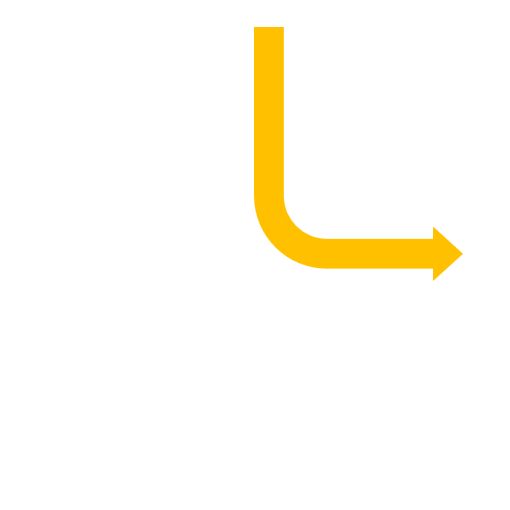

Recent text-to-3D generation methods achieve impressive 3D content creation capacity thanks to the advances in image diffusion models and optimizing strategies. However, current methods struggle to generate correct 3D content for a complex prompt in semantics, i.e., a prompt describing multiple interacted objects binding with different attributes. In this work, we propose a general framework named Progressive3D, which decomposes the entire generation into a series of locally progressive editing steps to create precise 3D content for complex prompts, and we constrain the content change to only occur in regions determined by user-defined region prompts in each editing step. Furthermore, we propose an overlapped semantic component suppression technique to encourage the optimization process to focus more on the semantic differences between prompts. Extensive experiments demonstrate that the proposed Progressive3D framework generates precise 3D content for prompts with complex semantics and is general for various text-to-3D methods driven by different 3D representations.
Overview of a local editing step of our proposed Progressive3D. Given a source representation supervised by source prompt, our framework aims to generate a target representation conforming to the input target prompt in 3d space defined by the region prompt. Conditioned on the 2D mask, we constrain the 3D content with region-related constraints. We further propose an Overlapped Semantic Component Suppression technique to impose the optimization focusing more on the semantic difference for precise progressive creation.
Current text-to-3D methods suffer from challenges when given prompts describing objects with different attributes. Compared to generating with existing methods, generating with Progressive3D produces 3D content consistent with given prompts.
| Generate with current methods | Generate with Progressive3D | |||||||
|
An astronaut holding a red rifle and riding a green origami motorcycle and wearing a cyan chef’s hat. |
An astronaut. |
An astronaut holding a red rifle. |
An astronaut holding a red rifle and riding a green origami motorcycle. |
An astronaut holding a red rifle and riding a green origami motorcycle and wearing a cyan chef’s hat. |
||||
|
A yellow tulip and a blue peony and a red rose in a golden vase. |
A golden vase. |
A red rose in a golden vase. |
A blue peony and a red rose in a golden vase. |
A yellow tulip and a blue peony and a red rose in a golden vase. |
||||
|
The Ironman with Gundam’s arm and Hulk’s arm and Spiderman’s body. |
The Ironman. |
The Ironman with Gundam’s arm. |
The Ironman with Gundam’s arm and Hulk’s arm. |
The Ironman with Gundam’s arm and Hulk’s arm and Spiderman’s body. |
||||
Progressive3D supports different editable region definations since their depth and opacity can be obtained from rendering.
| Source content | 3D bounding box | 2D mask | Custom mesh | 2D mask | ||
Current text-to-3D methods often fail to produce precise results when the given prompt describes multiple interacted objects binding with different attributes, leading to significant issues including object missing, attribute mismatching, and quality reduction. For each sample pairs, the left one is the generated by DreamTime, and the right one is created by Progressive3D.
| DreamTime | Ours | DreamTime | Ours | DreamTime | Ours |
| A blue peony in a pink vase. | A lego tank with a golden gun and a red flying flag. | A green spoon on a red cake in a yellow tray. | |||
| A round gift box on a hexagonal table. | A lego man and wearing a silver crown and riding a golden motorcycle. | An orange cat wearing a yellow suit and green sneakers. | |||
We provide progressive editing processes driven by different text-to-3D methods. For each sample groups, the results in upper row are generated by current methods and the results in bottom row are generated by Progressive3D.
| TextMesh | Fantasia3D | ||||||||||
| Ours |  | Ours | |||||||||
|
A model of a round building. |
A model of a round building with square roof. |
A model of a round building with square roof on a hexagonal park. |
A head of terracotta army. |
A head of terracotta army wearing a red sunglass. |
A head of terracotta army wearing a red sunglass and a gray hat. |
We provide more progressive editing results created with our Progressive3D based on DreamTime.
|
A star-shaped tray. |
A hexagonal cap on a star-shaped tray. |
A green cactus in a hexagonal cap on a star-shaped tray. |
A golden table. |
A ceramic tea pot on a golden table. |
A ceramic tea pot on and a lego car on a golden table. |
||||
|
A square pepper on a star-shaped tray. |
A red rose in a hexagonal cap on a star-shaped tray. |
A silver vase on a golden table. |
A ceramic tea pot on and a cardboard box on a golden table. |
||||||
|
A triangular cake on a star-shaped tray. |
A white lily in a hexagonal cap on a star-shaped tray. |
An origami box on a golden table. |
A ceramic tea pot on and wooden shoes on a golden table. |
@misc{cheng2023progressive3d,
title={Progressive3D: Progressively Local Editing for Text-to-3D Content Creation with Complex Semantic Prompts},
author={Xinhua Cheng and Tianyu Yang and Jianan Wang and Yu Li and Lei Zhang and Jian Zhang and Li Yuan},
year={2023},
eprint={2310.11784},
archivePrefix={arXiv},
primaryClass={cs.CV}
}